caret package in Rtrain functioncaret Page in RpreProcesscreateDataPartition; createResample; createTimeSlicestrain; predictconfusionMatrix (binary and categorical data)caret packages provides a unifying framework on many machine learning algorithms (linear discriminant analysis ….). Each one will produce an object as outcome which requires the input of type=..., but caret package eliminates that need.
library(caret); library(kernlab); data(spam)
inTrain<-createDataPartition(y=spam$type, p=0.75, list=FALSE) #75% of to train and the remainder to test
training<-spam[inTrain, ]
testing<-spam[-inTrain, ]
dim(training)## [1] 3451 58set.seed(2342)
modelFit<-train(type~., data=training, method="glm")
modelFit## Generalized Linear Model
##
## 3451 samples
## 57 predictor
## 2 classes: 'nonspam', 'spam'
##
## No pre-processing
## Resampling: Bootstrapped (25 reps)
## Summary of sample sizes: 3451, 3451, 3451, 3451, 3451, 3451, ...
## Resampling results:
##
## Accuracy Kappa
## 0.9222106 0.8357735modelFit$finalModel##
## Call: NULL
##
## Coefficients:
## (Intercept) make address
## -1.601e+00 -4.982e-01 -1.494e-01
## all num3d our
## 1.270e-01 2.001e+00 6.483e-01
## over remove internet
## 8.519e-01 2.010e+00 4.665e-01
## order mail receive
## 1.282e+00 2.704e-01 -1.463e-02
## will people report
## -2.094e-01 -2.586e-02 2.198e-01
## addresses free business
## 3.464e+00 1.016e+00 1.133e+00
## email you credit
## 8.560e-02 7.134e-02 8.248e-01
## your font num000
## 2.571e-01 1.583e-01 1.882e+00
## money hp hpl
## 2.981e-01 -2.458e+00 -5.347e-01
## george num650 lab
## -9.811e+00 5.230e-01 -2.420e+00
## labs telnet num857
## -7.674e-01 -7.623e+00 2.258e+00
## data num415 num85
## -9.731e-01 1.527e+00 -1.843e+00
## technology num1999 parts
## 7.172e-01 7.304e-03 -6.740e-01
## pm direct cs
## -1.039e+00 -5.562e-01 -5.733e+02
## meeting original project
## -2.972e+00 -8.951e-01 -1.785e+00
## re edu table
## -7.529e-01 -1.354e+00 -2.103e+00
## conference charSemicolon charRoundbracket
## -4.234e+00 -1.390e+00 -3.342e-01
## charSquarebracket charExclamation charDollar
## -1.361e+00 2.642e-01 6.085e+00
## charHash capitalAve capitalLong
## 3.236e+00 -2.873e-03 9.752e-03
## capitalTotal
## 1.194e-03
##
## Degrees of Freedom: 3450 Total (i.e. Null); 3393 Residual
## Null Deviance: 4628
## Residual Deviance: 1338 AIC: 1454predictions<-predict(modelFit, newdata=testing) #pass the object "modelFit" got from the train function
head(predictions) #show the first 6 predictions## [1] spam spam spam spam spam spam
## Levels: nonspam spamconfusionMatrix(predictions, testing$type) #report the 2*2 table (TP and FN etc.)## Confusion Matrix and Statistics
##
## Reference
## Prediction nonspam spam
## nonspam 658 52
## spam 39 401
##
## Accuracy : 0.9209
## 95% CI : (0.9037, 0.9358)
## No Information Rate : 0.6061
## P-Value [Acc > NIR] : <2e-16
##
## Kappa : 0.8334
##
## Mcnemar's Test P-Value : 0.2084
##
## Sensitivity : 0.9440
## Specificity : 0.8852
## Pos Pred Value : 0.9268
## Neg Pred Value : 0.9114
## Prevalence : 0.6061
## Detection Rate : 0.5722
## Detection Prevalence : 0.6174
## Balanced Accuracy : 0.9146
##
## 'Positive' Class : nonspam
## caret packagecaret tutorials:
* http://www.edii.uclm.es/~useR-2013/Tutorials/kuhn/user_caret_2up.pdf
* http://cran.r-project.org/web/packages/caret/vignettes/caret.pdf
A paper introducing the caret package:
* http://www.jstatsoft.org/v28/i05/paper
It is often useful to set an overall seed for repeatable experiments since most procedures involve random sampling. When you share your model/data with collaborators, they will get the same results.
p=...)library(caret); library(kernlab); data(spam)
inTrain<-createDataPartition(y=spam$type, p=0.75, list=FALSE)
training<-spam[inTrain, ]
testing<-spam[-inTrain, ]
dim(training)## [1] 3451 58set.seed(13422)
folds<-createFolds(y=spam$type, k=10, list=TRUE, returnTrain=TRUE) #createFolds is a function in caret package. You supply the variable to be split on in the argument of "y=..."
sapply(folds, length) #folds is a list and check the length of each of the ten folds## Fold01 Fold02 Fold03 Fold04 Fold05 Fold06 Fold07 Fold08 Fold09 Fold10
## 4141 4141 4141 4141 4140 4141 4141 4141 4141 4141folds[[1]][1:10] #show the observations actually contained in the first fold. The first ten elements of the first element of the fold's list correspond to the first ten observations of the sample ## [1] 1 2 3 4 5 6 7 8 9 10## Training set
dim(spam[folds[[1]], ])## [1] 4141 58folds<-createFolds(y=spam$type, k=10, list=TRUE, returnTrain=FALSE) #argument "returnTrain=FALSE" means to return TESTING set
folds[[1]][1:10] #similarly, you can see the actual observations included in the first test set in k-fold validation## [1] 35 38 44 46 49 51 54 63 71 74## Test set
dim(spam[folds[[1]], ])## [1] 461 58set.seed(432525)
folds<-createResample(y=spam$type, times=10, list=TRUE)
sapply(folds, length)## Resample01 Resample02 Resample03 Resample04 Resample05 Resample06
## 4601 4601 4601 4601 4601 4601
## Resample07 Resample08 Resample09 Resample10
## 4601 4601 4601 4601folds[[1]][1:10] #you may see observations repeated because resampling is done with replacement## [1] 2 3 3 3 4 5 12 13 15 17set.seed(213432)
tme<-1:1000
folds<-createTimeSlices(y=tme, initialWindow=20, horizon=10)
names(folds)## [1] "train" "test"folds$train[[1]] ##continuous from 1 to 20; the argument "initialWindow=20"## [1] 1 2 3 4 5 6 7 8 9 10 11 12 13 14 15 16 17 18 19 20folds$test[[1]] ##the next 10 for prediction; the argument "horizon=10"## [1] 21 22 23 24 25 26 27 28 29 30#the next slice will shift over accordingly and they are continuous in timelibrary(caret); library(kernlab); data(spam)
inTrain<-createDataPartition(y=spam$type, p=0.75, list=FALSE)
training<-spam[inTrain, ]
testing<-spam[-inTrain, ]
modelFit<-train(type~., data=training, method="glm") #accept defaults
#evaluation metric: for continuous outcome variable, it is RMSE the algorithm tries to minimize. You could use R-squared, more suitable for linear setting; for factor outcome variable, it is the accuracy the algorithm tries to maximize
?train.default
#allows you to be more precise about the way you train the model; method options are available for all the above discussed methods
args(trainControl) One key element is to understand how the data actually look and how they interact with each other. Best way to do this is to use plots.
The below example is from the ISLR package from the book: Introduction to statistical learning
library(ISLR); library(ggplot2); library(caret); library(Hmisc); library(gridExtra)## Loading required package: survival##
## Attaching package: 'survival'## The following object is masked from 'package:caret':
##
## cluster## Loading required package: Formula##
## Attaching package: 'Hmisc'## The following objects are masked from 'package:base':
##
## format.pval, unitsdata(Wage)
summary(Wage) ## year age maritl race
## Min. :2003 Min. :18.00 1. Never Married: 648 1. White:2480
## 1st Qu.:2004 1st Qu.:33.75 2. Married :2074 2. Black: 293
## Median :2006 Median :42.00 3. Widowed : 19 3. Asian: 190
## Mean :2006 Mean :42.41 4. Divorced : 204 4. Other: 37
## 3rd Qu.:2008 3rd Qu.:51.00 5. Separated : 55
## Max. :2009 Max. :80.00
##
## education region
## 1. < HS Grad :268 2. Middle Atlantic :3000
## 2. HS Grad :971 1. New England : 0
## 3. Some College :650 3. East North Central: 0
## 4. College Grad :685 4. West North Central: 0
## 5. Advanced Degree:426 5. South Atlantic : 0
## 6. East South Central: 0
## (Other) : 0
## jobclass health health_ins logwage
## 1. Industrial :1544 1. <=Good : 858 1. Yes:2083 Min. :3.000
## 2. Information:1456 2. >=Very Good:2142 2. No : 917 1st Qu.:4.447
## Median :4.653
## Mean :4.654
## 3rd Qu.:4.857
## Max. :5.763
##
## wage
## Min. : 20.09
## 1st Qu.: 85.38
## Median :104.92
## Mean :111.70
## 3rd Qu.:128.68
## Max. :318.34
## inTrain<-createDataPartition(y=Wage$wage, p=0.7, list=FALSE)
training<-Wage[inTrain, ]
testing<-Wage[-inTrain, ]
dim(training); dim(testing)## [1] 2102 11## [1] 898 11featurePlot(x=training[, c("age", "education", "jobclass")], y=training$wage, plot="pairs") #variables plot against one another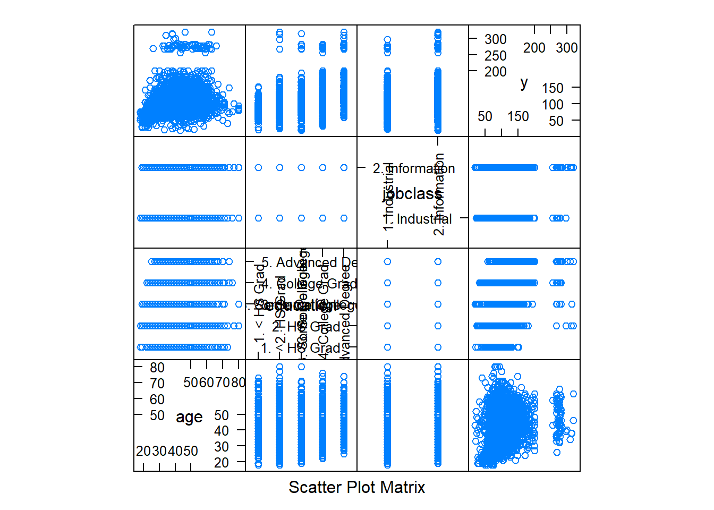
qplot(age, wage, data=training) #two groups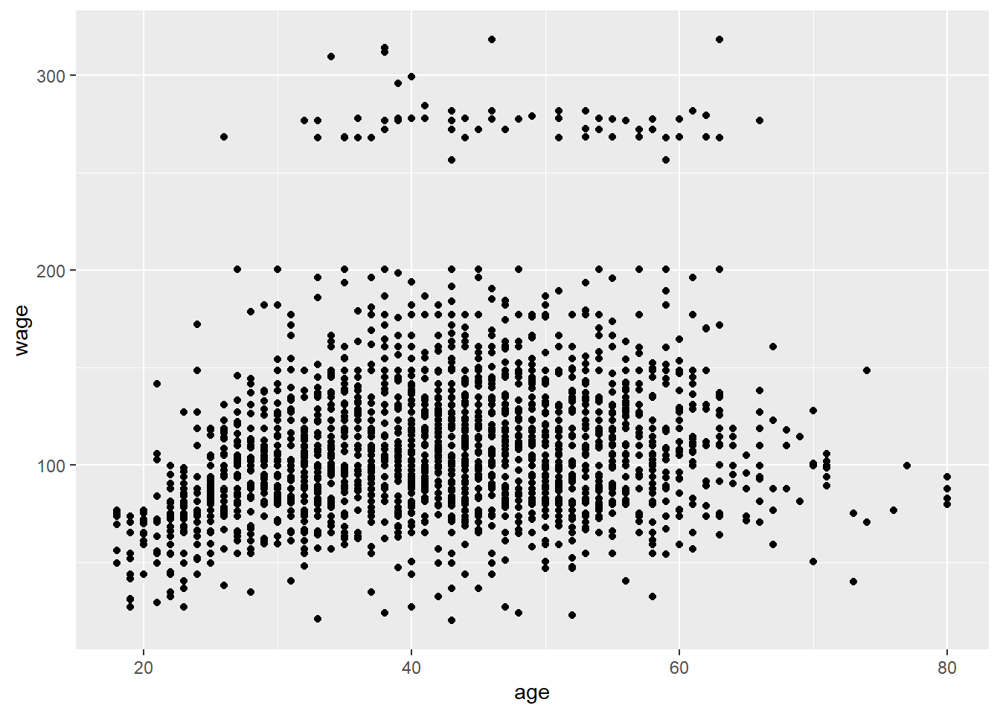
qplot(age, wage, colour=jobclass, data=training) #color-coded with job class: industrial vs information; high-wage earners mostly belong to the information jobs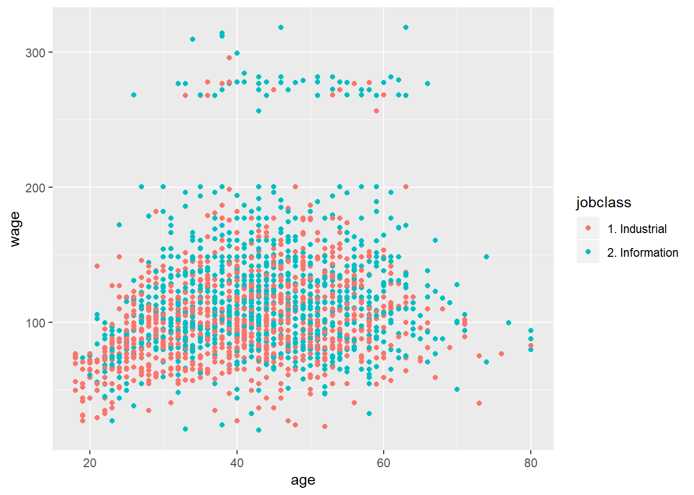
qq<-qplot(age, wage, color=education, data=training)
qq+geom_smooth(method="lm", formula=y~x) #apply a linear smoother on each class of eduction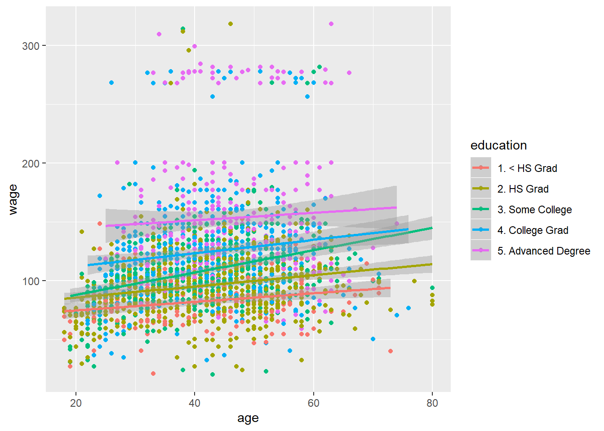
cutWage<-cut2(training$wage, g=3) #cut2 in Hmisc package, g argument specified number of groups to be divided; it breaks dataset into factors based on quantile groups
p1<-qplot(cutWage, age, data=training, fill=cutWage, geom=c("boxplot"))
p1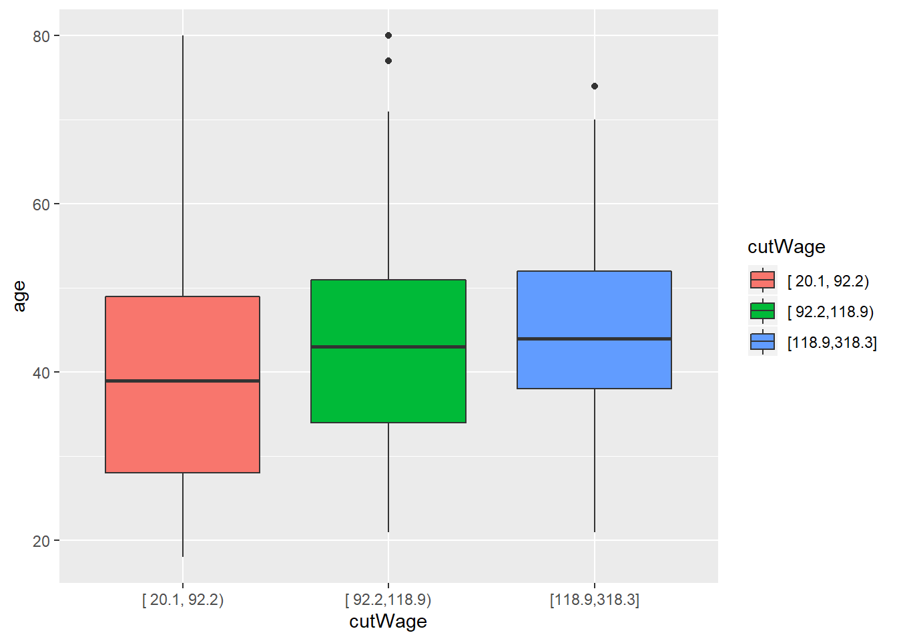
p2<-qplot(cutWage, age, data=training, fill=cutWage, geom=c("boxplot", "jitter"))
grid.arrange(p1, p2, ncol=2) #generate two plots (boxplot and boxplot with points overlaying on top) side by side; desirable for many points that drive the trend (not obscured by just a few points)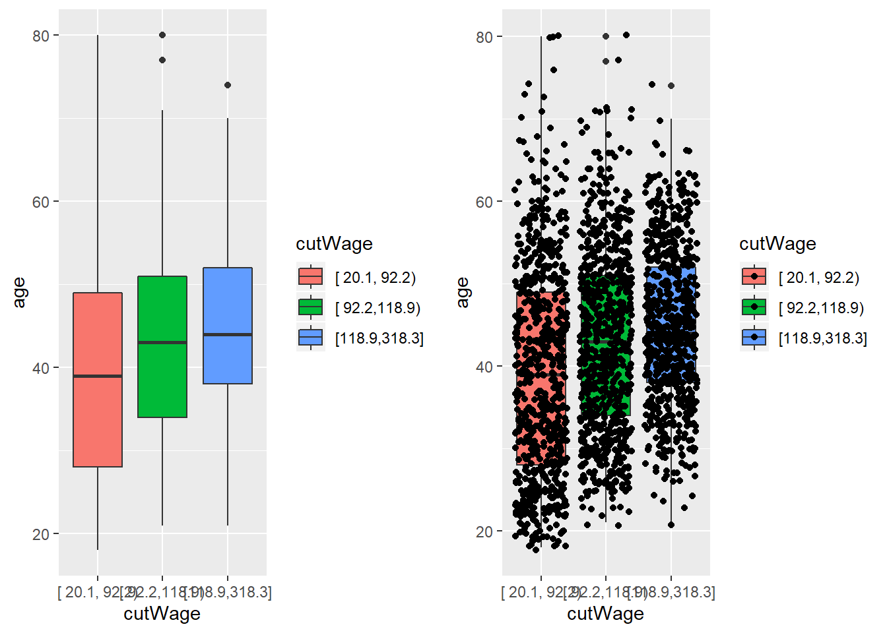
t1<-table(cutWage, training$jobclass)
t1##
## cutWage 1. Industrial 2. Information
## [ 20.1, 92.2) 437 264
## [ 92.2,118.9) 372 354
## [118.9,318.3] 267 408prop.table(t1, 1) #option: 1 is the row and 2 is column percentage##
## cutWage 1. Industrial 2. Information
## [ 20.1, 92.2) 0.6233951 0.3766049
## [ 92.2,118.9) 0.5123967 0.4876033
## [118.9,318.3] 0.3955556 0.6044444qplot(wage, colour=education, data=training, geom="density") #density plot of wages shows double peaks for advanced-degree and college-degree holders, which is not shown in the box-plot. 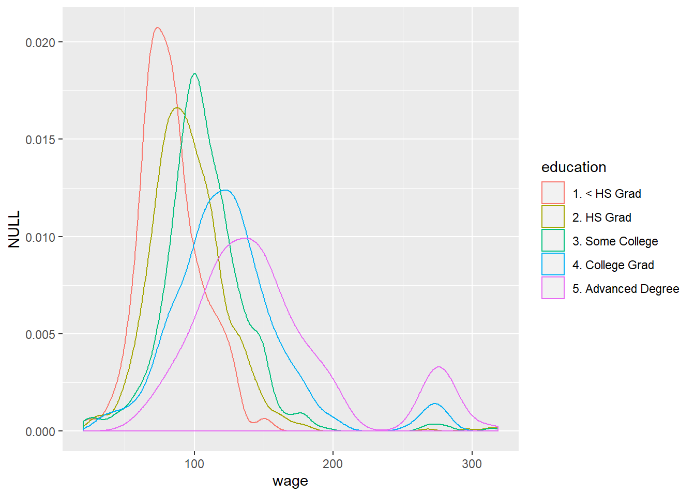
A list of things to keep in mind:
1. make plots only in training set
2. imbalance in outcomes/predictors * value of predictor almost all in one outcome group and not the other is an indicator that it is a good predictor
* when outcome value predominently belongs to one group leaving few to the other, it is difficult to build a predictive model
3. outliers (which may suggest missing variable)
4. groups of points not explained by a predictor on the graph (suggesting another variable in play)
5. skewed variables
* The remedy is to transform the data - make less skewed and more normal in regression model
library(caret); library(kernlab); data(spam)
inTrain <- createDataPartition(y=spam$type, p=0.75, list=FALSE)
training <- spam[inTrain,]
testing <- spam[-inTrain,]
hist(training$capitalAve, main="", xlab="ave. capital run length")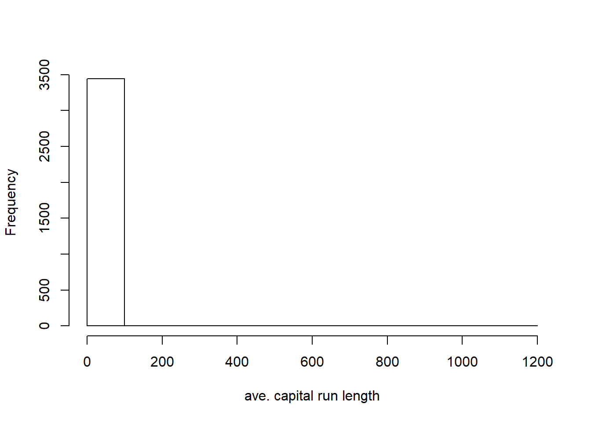
mean(training$capitalAve) ## [1] 4.934781sd(training$capitalAve) #very skewed## [1] 32.11576#standardize the variable where the sd is 1 (greatly reduced the skewness)
trainCapAve<-training$capitalAve
trainCapAveS<-(trainCapAve-mean(trainCapAve))/sd(trainCapAve)
mean(trainCapAve)## [1] 4.934781## KEY! standardizing in the test set: use only parameters estimated from training set
testCapAve<-testing$capitalAve
testCapAveS<-(testCapAve-mean(trainCapAve))/sd(trainCapAve) #the mean and sd will not be 0 and 1
## preProcess function to perform similar functions
preObj<-preProcess(training[, -58], method=c("center", "scale")) # 58th vbl is the actual outcome
trainCapAveS<-predict(preObj, training[, -58])$capitalAve
mean(trainCapAveS); sd(trainCapAveS)## [1] 8.287223e-18## [1] 1## value calculated from preObj to apply to the test
settestCapAveS<-predict(preObj, testing[, -58])$capitalAve
mean(testCapAveS); sd(testCapAveS)## [1] 0.03198309## [1] 0.9509827#Alternatively, use preProcess argument in the train function
set.seed(32422)
modelFit<-train(type~., data=training, preProcess=c("center", "scale"), method="glm")Besides centering and scaling, we can use Box-Cox transforms.
##take continuous data and try to make them look more normal (use maximum likelihood)
preObj<-preProcess(training[, -58], method=c("BoxCox"))
trainCapAveS<-predict(preObj, training[, -58])$capitalAve
par(mfrow=c(1, 2)); hist(trainCapAveS); qqnorm(trainCapAveS) #success depends on the data quirks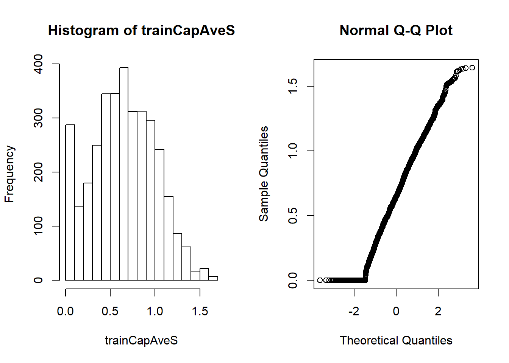
set.seed(342435)
#make some values NA
training$capAve<-training$capitalAve
selectNA<-rbinom(dim(training)[1], size=1, prob=0.05)==1
training$capAve[selectNA]<-NA
#impute
preObj<-preProcess(training[, -58], method="knnImpute") #knn - k nearest neighbour
capAve<-predict(preObj, training[, -58])$capAve
#standardize true values
capAveTruth<-training$capitalAve
capAveTruth<-(capAveTruth-mean(capAveTruth))/sd(capAveTruth)
#check if the imputation is good
quantile(capAve-capAveTruth) #if good, shall be close to zero## 0% 25% 50% 75% 100%
## -9.173999693 -0.007212467 -0.003707831 0.003725649 5.423299330quantile((capAve-capAveTruth)[selectNA]) #more variation in the comparison between imputed and true values## 0% 25% 50% 75% 100%
## -9.173999693 -0.013512596 0.001392659 0.019212542 1.238772782quantile((capAve-capAveTruth)[!selectNA])## 0% 25% 50% 75% 100%
## -0.009996939 -0.007094084 -0.003831146 0.003317473 5.423299330library(ISLR); library(caret); data(Wage)
inTrain<-createDataPartition(y=Wage$wage, p=0.7, list=FALSE)
training<-Wage[inTrain, ]; testing<-Wage[-inTrain, ]
## turn factor/qualitative vbl to dummy/indicator vbl
table(training$jobclass) #two types: Industrail vs Information##
## 1. Industrial 2. Information
## 1080 1022dummies<-dummyVars(wage~ jobclass, data=training) #dummyVar in caret package
head(predict(dummies, newdata=training)) #creates two dummy variables## jobclass.1. Industrial jobclass.2. Information
## 231655 1 0
## 161300 1 0
## 155159 0 1
## 11443 0 1
## 376662 0 1
## 302778 0 1nsv<-nearZeroVar(training, saveMetrics=TRUE) #can drop the nzv column with true values: near-zero-variable
#identify the index location of nearZeroVar variables and drop them right away
nsv<-nearZeroVar(training)
train.data<-training[, -nsv]
dim(train.data)## [1] 2102 10## spline basis
library(splines)
bsBasis<-bs(training$age, df=3) #up to cubic relation of predictor to outcome; bs is the basis function
lm1<-lm(wage~bsBasis, data=training)
plot(training$age, training$wage, pch=19, cex=0.5)
points(training$age, predict(lm1, newdata=training), col="red", pch=19, cex=0.5)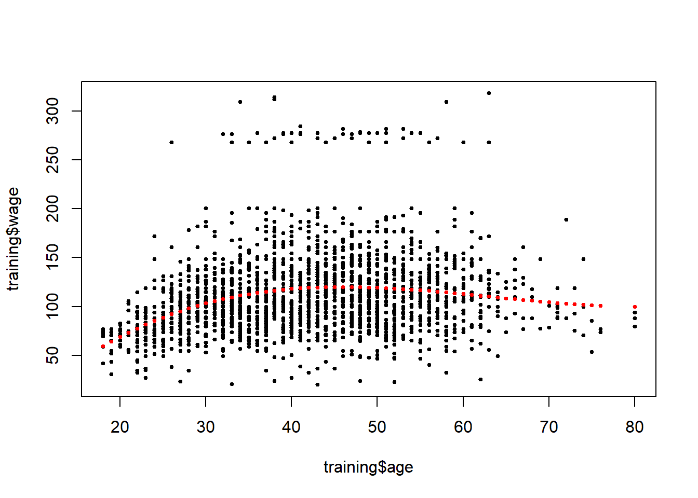
## splines on the test set
prediction1<-predict(bsBasis, age=testing$age) ## VERY IMPORTANT: use the calculated parameters in the training set and apply to vbls to be transformed in test setThe goal is to capture as much variation as possible (you can specify the proportion of variation explained for selecting number of variables) with fewer variables. After transformation, we use a (linear) combination of the original predictors.
library(caret); library(kernlab); data(spam)
inTrain<-createDataPartition(y=spam$type, p=0.75, list=FALSE)
training<-spam[inTrain, ]
testing<-spam[-inTrain, ]
M<-abs(cor(training[, -58])) #abs of the correlation of vbl pairs
diag(M)<-0 #not interested in vbl in itself s ince they are all 1
which(M>0.8, arr.ind=T) #display vbls## row col
## num415 34 32
## direct 40 32
## num857 32 34
## direct 40 34
## num857 32 40
## num415 34 40names(spam)[c(34, 32)]## [1] "num415" "num857"plot(spam[, 34], spam[, 32])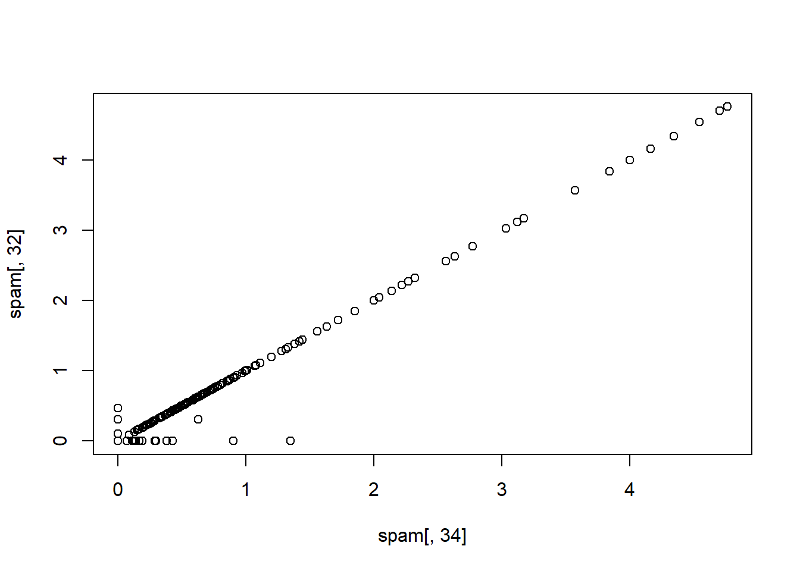
#in essense is to use weighted combination of predictors
#benefits: reduce number of predictors and reduce noise
## one possibility
X<-0.71*training$num415+0.71*training$num857
Y<-0.71*training$num415-0.71*training$num857
plot(X, Y) #variation concentrates on X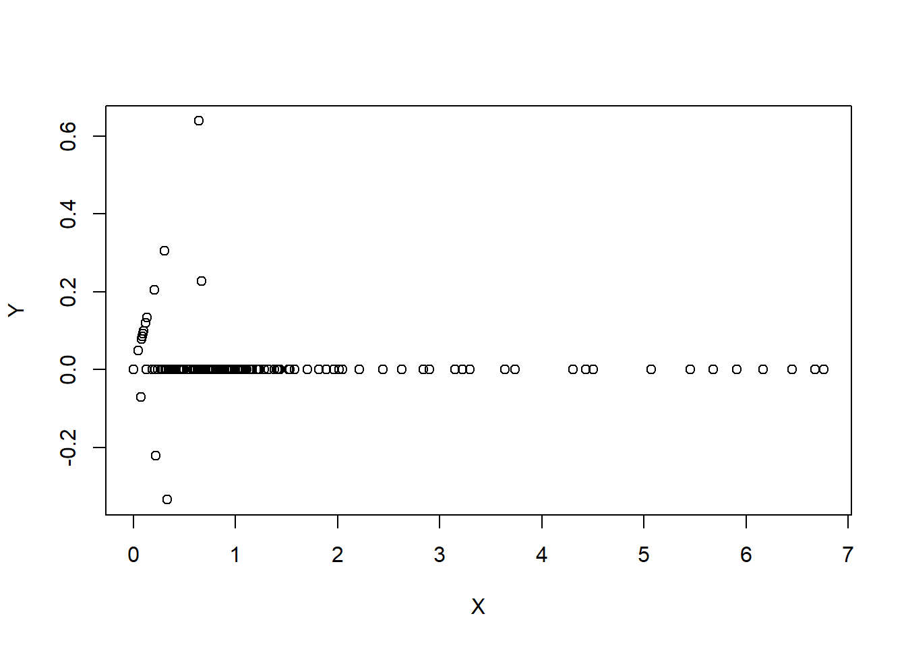
## find a new set of multivariate vbls that are uncorrelated and explain as much var as possible (statistical); and then put all the vbls together in one matrix and find the best matrix created with fewer variables (lower rank) that explains the original data (data compression)
# SVD (singular value decomposition)
# PCA - the right singular values if you first scale the vbls (normalize)
smallSpam<-spam[, c(34, 32)]
prComp<-prcomp(smallSpam)
plot(prComp$x[, 1], prComp$x[, 2]) #very similar to the previous plot; extendable to multivariates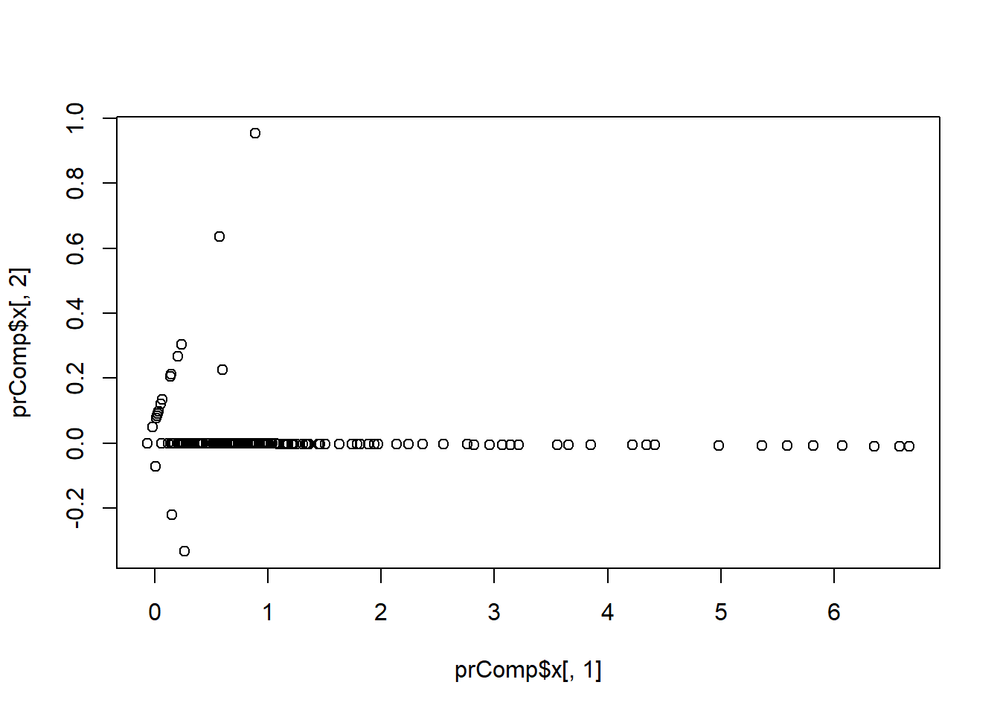
prComp$rotation #explains how the weights from the previous exercise are obtained## PC1 PC2
## num415 0.7080625 0.7061498
## num857 0.7061498 -0.7080625#PCA extends to the entire dataset
typeColor<-((spam$type=="spam")*1+1)
prComp<-prcomp(log10(spam[, -58]+1)) #transform skewed vbls to be more Gaussian
plot(prComp$x[, 1], prComp$x[, 2], col=typeColor, xlab="PC1", ylab="PC2")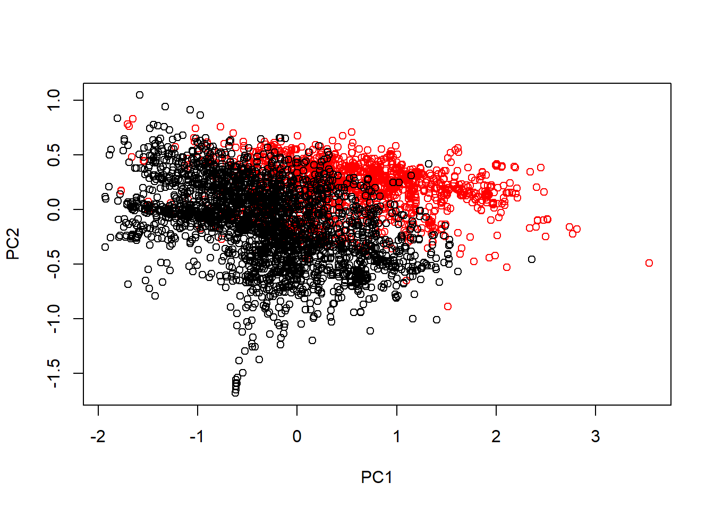
## plot the variance explained by different number of PCAs
prComp<-prcomp(training[, -58], scale.=TRUE)
std_dev<-prComp$sdev
pr_var<-std_dev^2
prop_varex<-pr_var/sum(pr_var)
sum(prop_varex[1:48])## [1] 0.953784plot(cumsum(prop_varex), xlab="Principal Component", ylab="Cumulative Proportioin of Variance Explained", type="b")
abline(h=0.95, col="red", v=48)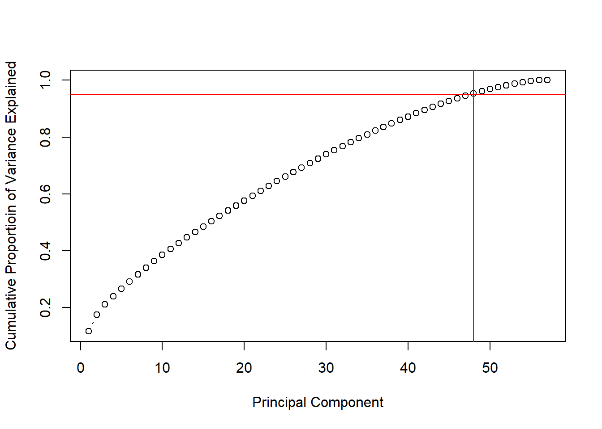
## Do it in Caret:
#PCA with caret where you specify the number of principal components to be 2
preProc<-preProcess(log10(spam[, -58]+1), method="pca", pcaComp=2)
spamPC<-predict(preProc, log10(spam[, -58]+1))
plot(spamPC[, 1], spamPC[, 2], col=typeColor)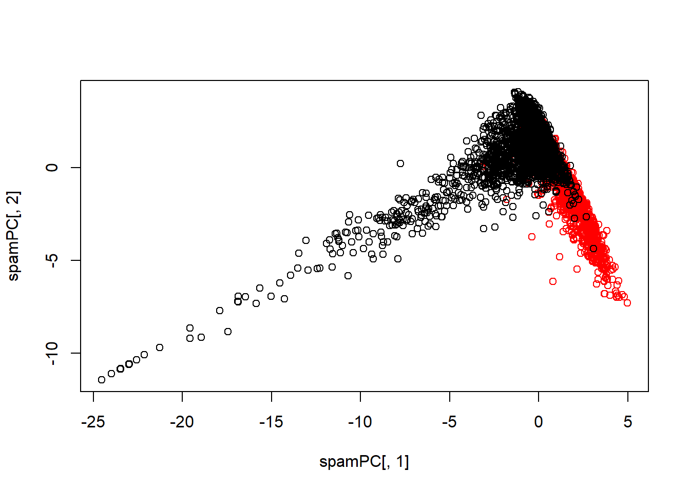
## training set and then test set
preProc<-preProcess(log10(training[, -58]+1), method="pca", pcaComp=2)
trainPC<-predict(preProc, log10(training[, -58]+1))
#modelFit<-train(training$type~., method="glm", data=trainPC)
modelFit <- train(x = trainPC, y = training$type,method="glm")
testPC<-predict(preProc, log10(testing[, -58]+1))
confusionMatrix(testing$type, predict(modelFit, testPC))## Confusion Matrix and Statistics
##
## Reference
## Prediction nonspam spam
## nonspam 656 41
## spam 86 367
##
## Accuracy : 0.8896
## 95% CI : (0.87, 0.9071)
## No Information Rate : 0.6452
## P-Value [Acc > NIR] : < 2.2e-16
##
## Kappa : 0.7646
##
## Mcnemar's Test P-Value : 9.447e-05
##
## Sensitivity : 0.8841
## Specificity : 0.8995
## Pos Pred Value : 0.9412
## Neg Pred Value : 0.8102
## Prevalence : 0.6452
## Detection Rate : 0.5704
## Detection Prevalence : 0.6061
## Balanced Accuracy : 0.8918
##
## 'Positive' Class : nonspam
## #alternative which combines the PreProcess and predict functions
modelFit<-train(type~., method="glm", preProcess="pca", data=training)
#modelFit <- train(x = trainPC, y = training$type,method="glm", preProcess="pca")
confusionMatrix(testing$type, predict(modelFit, testing))## Confusion Matrix and Statistics
##
## Reference
## Prediction nonspam spam
## nonspam 665 32
## spam 54 399
##
## Accuracy : 0.9252
## 95% CI : (0.9085, 0.9398)
## No Information Rate : 0.6252
## P-Value [Acc > NIR] : < 2e-16
##
## Kappa : 0.842
##
## Mcnemar's Test P-Value : 0.02354
##
## Sensitivity : 0.9249
## Specificity : 0.9258
## Pos Pred Value : 0.9541
## Neg Pred Value : 0.8808
## Prevalence : 0.6252
## Detection Rate : 0.5783
## Detection Prevalence : 0.6061
## Balanced Accuracy : 0.9253
##
## 'Positive' Class : nonspam
## PCA most useful for linear-type models, but it can be hard to interpret predictors. Watch out for outliers - look at exploratory plots and transform with logs/Box Cox first. ## Predicting with regression models
library(caret); data(faithful); set.seed(333)
inTrain<-createDataPartition(y=faithful$waiting, p=0.5, list=FALSE)
trainFaith<-faithful[inTrain, ]; testFaith<-faithful[-inTrain, ]
head(trainFaith)## eruptions waiting
## 3 3.333 74
## 6 2.883 55
## 7 4.700 88
## 8 3.600 85
## 9 1.950 51
## 11 1.833 54lm1<-lm(eruptions~waiting, data=trainFaith)
summary(lm1)##
## Call:
## lm(formula = eruptions ~ waiting, data = trainFaith)
##
## Residuals:
## Min 1Q Median 3Q Max
## -1.13375 -0.36778 0.06064 0.36578 0.96057
##
## Coefficients:
## Estimate Std. Error t value Pr(>|t|)
## (Intercept) -1.648629 0.226603 -7.275 2.55e-11 ***
## waiting 0.072211 0.003136 23.026 < 2e-16 ***
## ---
## Signif. codes: 0 '***' 0.001 '**' 0.01 '*' 0.05 '.' 0.1 ' ' 1
##
## Residual standard error: 0.4941 on 135 degrees of freedom
## Multiple R-squared: 0.7971, Adjusted R-squared: 0.7956
## F-statistic: 530.2 on 1 and 135 DF, p-value: < 2.2e-16plot(trainFaith$waiting, trainFaith$eruptions, pch=19, col="blue", xlab="Waiting", ylab="Duration")
lines(trainFaith$waiting, lm1$fitted, lwd=3)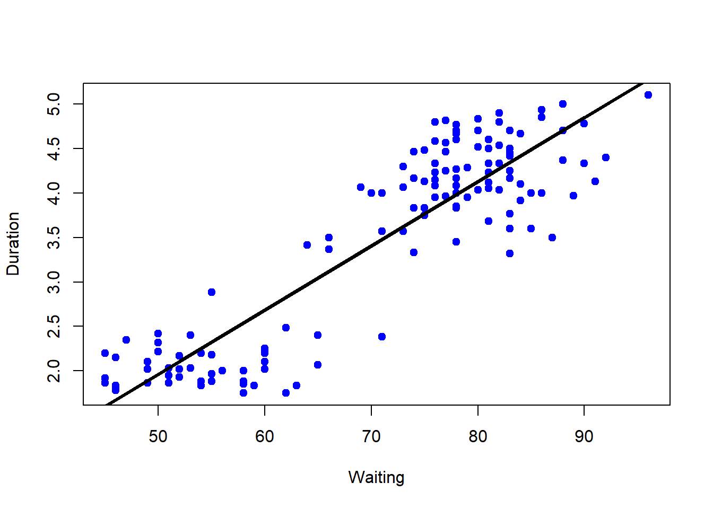
#make a prediction with specific wait time = 80
coef(lm1)[1]+coef(lm1)[2]*80## (Intercept)
## 4.128276#prediction alternative: give a new data frame
newdata<-data.frame(waiting=80)
predict(lm1, newdata) #newdata need to be dataframe## 1
## 4.128276## Plot predictions - training and test
par(mfrow=c(1, 2))
plot(trainFaith$waiting, trainFaith$eruptions, pch=19, col="blue", xlab="Waiting", ylab="Duration")
lines(trainFaith$waiting, predict(lm1), lwd=3)
plot(testFaith$waiting, testFaith$eruptions, pch=19, col="blue", xlab="Waiting", ylab="Duration")
lines(testFaith$waiting, predict(lm1, newdata=testFaith), lwd=3)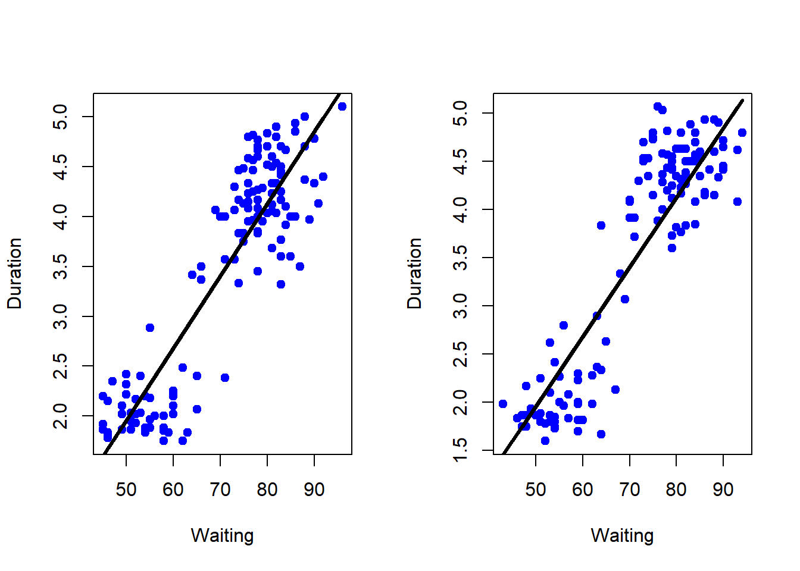
#Prediction accuracy: calculate the RMSE on training
sqrt(sum((lm1$fitted-trainFaith$eruptions)^2)) #5.75## [1] 5.740844sqrt(sum((predict(lm1, newdata=testFaith)-testFaith$eruptions)^2)) #5.84 (almost always larger)## [1] 5.853745#prediction intervals
pred1<-predict(lm1, newdata=testFaith, interval="prediction")
ord<-order(testFaith$waiting)
plot(testFaith$waiting, testFaith$eruptions, pch=19, col="blue")
matlines(testFaith$waiting[ord], pred1[ord, ], type="l", col=c(1,2,2), lty=c(1,1,1), lwd=3)
## same process with caret
modFit<-train(eruptions ~ waiting, data=trainFaith, method="lm")
summary(modFit$finalModel)##
## Call:
## lm(formula = .outcome ~ ., data = dat)
##
## Residuals:
## Min 1Q Median 3Q Max
## -1.13375 -0.36778 0.06064 0.36578 0.96057
##
## Coefficients:
## Estimate Std. Error t value Pr(>|t|)
## (Intercept) -1.648629 0.226603 -7.275 2.55e-11 ***
## waiting 0.072211 0.003136 23.026 < 2e-16 ***
## ---
## Signif. codes: 0 '***' 0.001 '**' 0.01 '*' 0.05 '.' 0.1 ' ' 1
##
## Residual standard error: 0.4941 on 135 degrees of freedom
## Multiple R-squared: 0.7971, Adjusted R-squared: 0.7956
## F-statistic: 530.2 on 1 and 135 DF, p-value: < 2.2e-16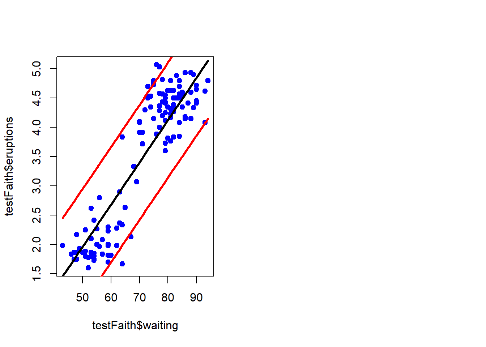
library(ISLR); library(ggplot2); library(caret);
data(Wage); Wage<-subset(Wage, select=-c(logwage)) #select out the variable we try to predict
summary(Wage)## year age maritl race
## Min. :2003 Min. :18.00 1. Never Married: 648 1. White:2480
## 1st Qu.:2004 1st Qu.:33.75 2. Married :2074 2. Black: 293
## Median :2006 Median :42.00 3. Widowed : 19 3. Asian: 190
## Mean :2006 Mean :42.41 4. Divorced : 204 4. Other: 37
## 3rd Qu.:2008 3rd Qu.:51.00 5. Separated : 55
## Max. :2009 Max. :80.00
##
## education region
## 1. < HS Grad :268 2. Middle Atlantic :3000
## 2. HS Grad :971 1. New England : 0
## 3. Some College :650 3. East North Central: 0
## 4. College Grad :685 4. West North Central: 0
## 5. Advanced Degree:426 5. South Atlantic : 0
## 6. East South Central: 0
## (Other) : 0
## jobclass health health_ins
## 1. Industrial :1544 1. <=Good : 858 1. Yes:2083
## 2. Information:1456 2. >=Very Good:2142 2. No : 917
##
##
##
##
##
## wage
## Min. : 20.09
## 1st Qu.: 85.38
## Median :104.92
## Mean :111.70
## 3rd Qu.:128.68
## Max. :318.34
## #separate dataset into training and testing set
inTrain<-createDataPartition(y=Wage$wage, p=0.7, list=FALSE)
training<-Wage[inTrain, ]; testing<-Wage[-inTrain, ]
dim(training); dim(testing)## [1] 2102 10## [1] 898 10#Feature plot
featurePlot(x=training[, c("age", "education", "jobclass")], y=training$wage, plot="pairs")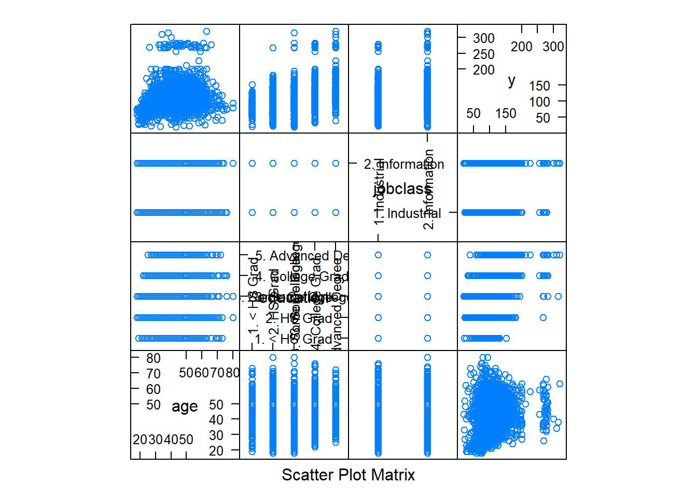
# plot age vs wage
qplot(age, wage, data=training) #seems to be two groups and need to figure out what variable may explain the difference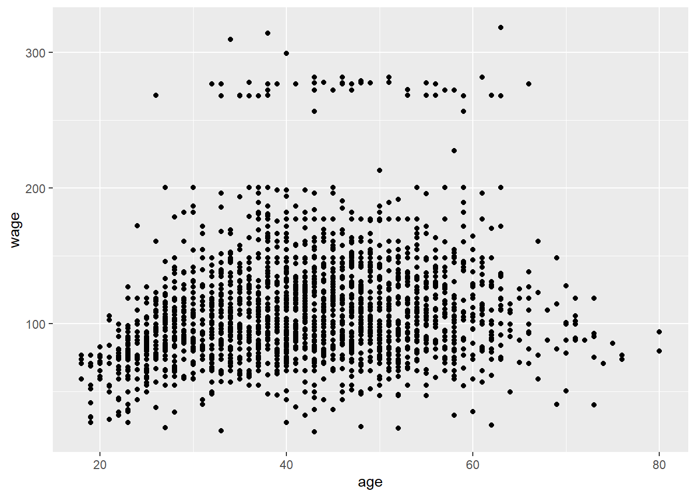
qplot(age, wage, colour=jobclass, data=training)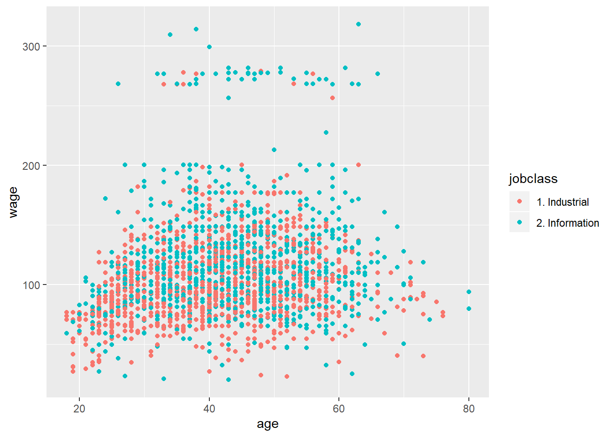
qplot(age, wage, colour=education, data=training) #both seem to have explanatory power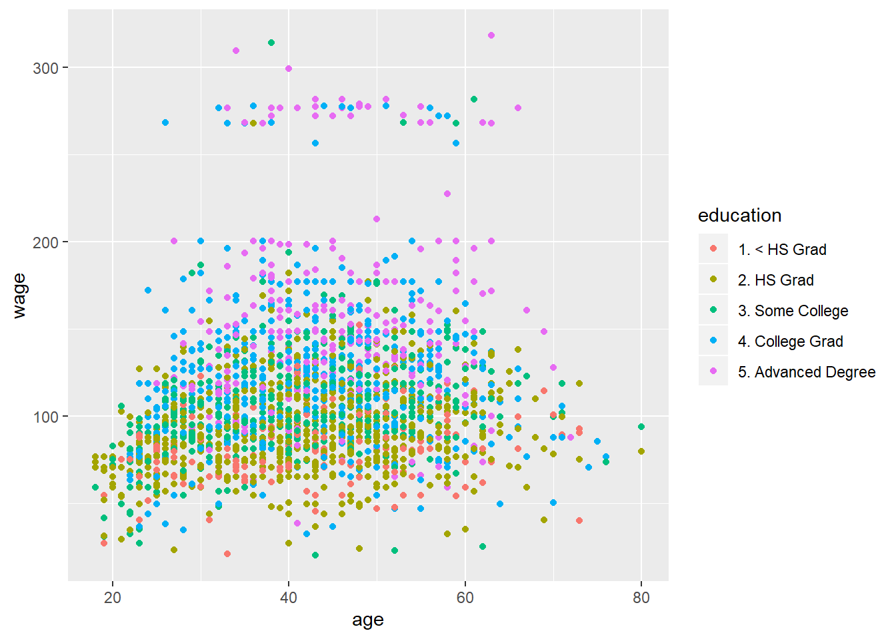
# fit a linear model
modFit<-train(wage~age+jobclass+education, method="lm", data=training) #by default, the factor variables automatically changed to dummy/indicator variables
finMod<-modFit$finalModel
print(modFit)## Linear Regression
##
## 2102 samples
## 3 predictor
##
## No pre-processing
## Resampling: Bootstrapped (25 reps)
## Summary of sample sizes: 2102, 2102, 2102, 2102, 2102, 2102, ...
## Resampling results:
##
## RMSE Rsquared MAE
## 35.56759 0.2589245 24.87554
##
## Tuning parameter 'intercept' was held constant at a value of TRUE# diagnostics
plot(finMod, 1, pch=19, cex=0.5, col="#00000010") #fitted values VS residuals plot - would prefer the line stays at zero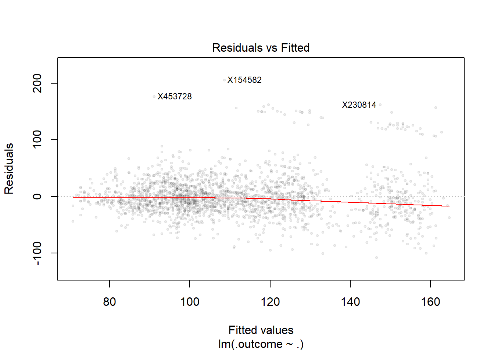
#color by variables not used in the model to see if outliers can be explained by the variable excluded in the model
qplot(finMod$fitted, finMod$residuals, colour=race, data=training)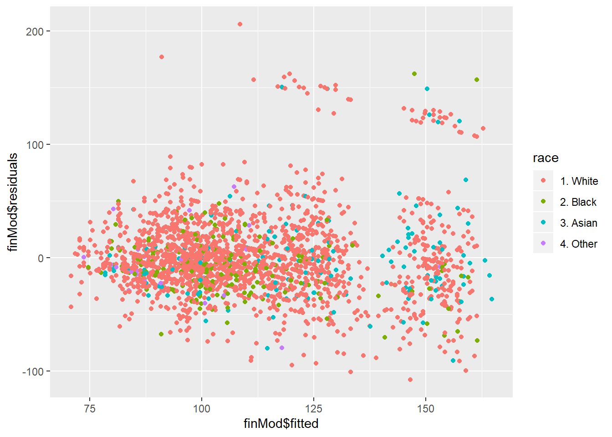
#plot by (row) index - prefer no trend but if there is, it is likely an omitted variable problem (sth that is rising with a continuous variable like time and age)
plot(finMod$residuals, pch=19)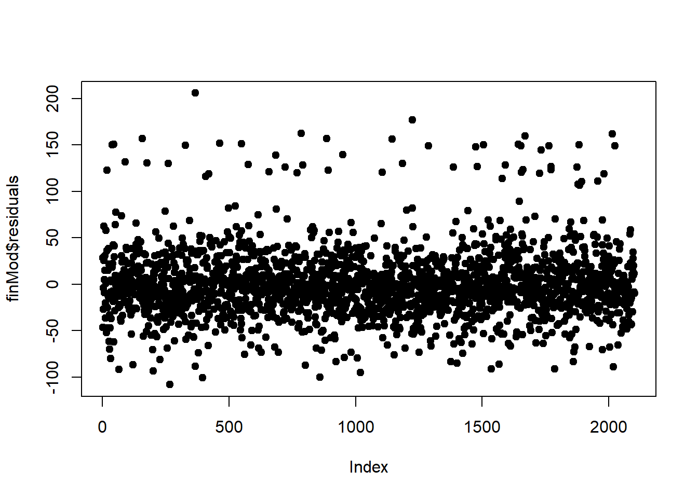
#plot predicted vs truth in the test set - ideally, a 45 degree line (!!! cannot use the insight to update your model)
pred<-predict(modFit, testing)
qplot(wage, pred, colour=year, data=testing)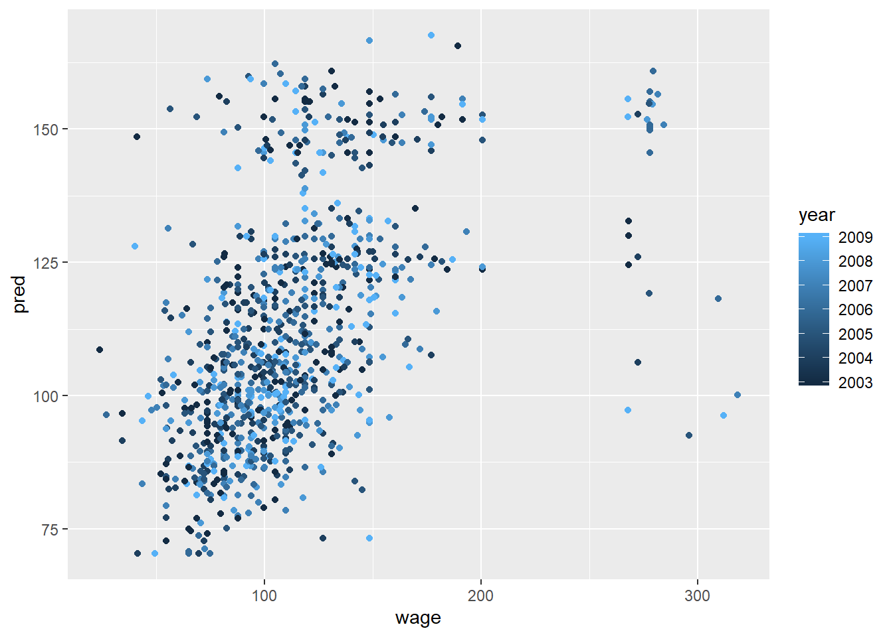
#use all covariates
modFitAll<-train(wage~., data=training, method="lm")
pred<-predict(modFitAll, testing)
qplot(wage, pred, data=testing)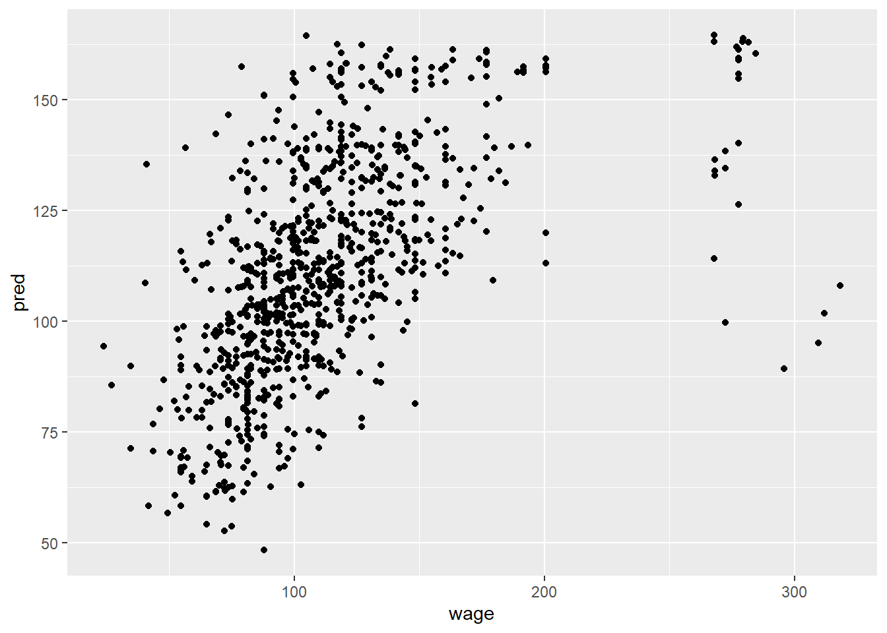
Copyright © 2019 Cathy Gao at cathygao.2019@outlook.com.